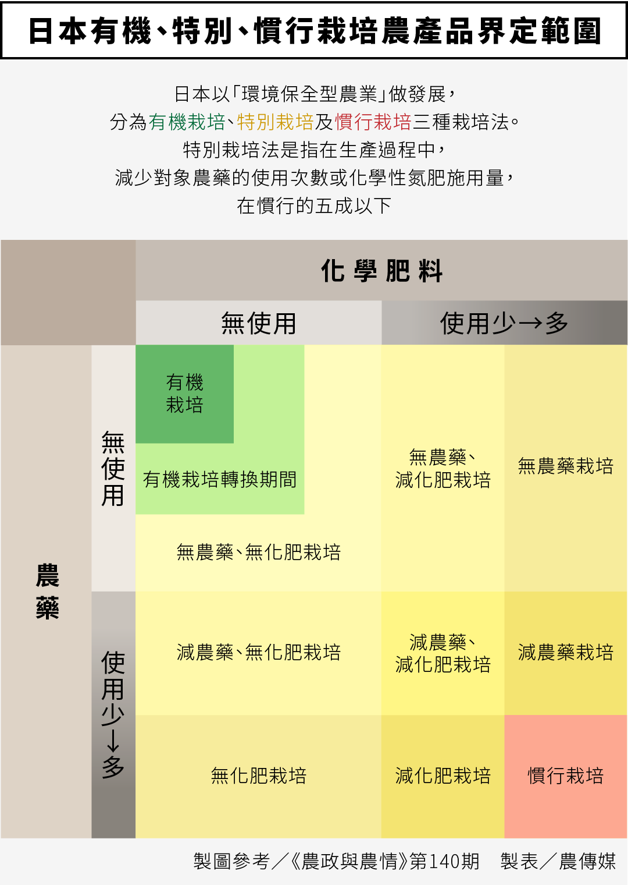
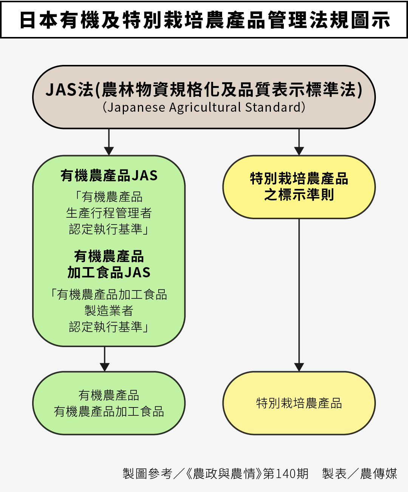

口述／王鐘和 文、採訪整理／何嘉浩 首圖提供／ 製表／柯皓翔
在2008年，官方公布了《農產品生產及驗證管理法》，規範唯有經過驗證，才得以宣稱「有機」，並以此建立了一套有機農產品的管理體系，並提供驗證補助，鼓勵農友加入。
但到2016年底，有機農業面積仍不到農地總面積的1%。農委會檢討後，今年公布將增加「友善農業」的範圍，給予補貼並納入有機農業面積計算，這對於有機驗證會有何影響？
20幾年來，屏東科技大學農園生產系教授王鐘和，在有機農業的發展扮演重要角色，運用本身土壤及農業化學的背景，協助有機驗證體系更妥善，並擔任台灣有機產業促進協會理事長，從事農業推廣及教育工作。
《農傳媒》訪問王鐘和對相關政策的建議，並以第一人稱摘要呈現。
友善農業定義應清楚，妥當運用補貼
對於政府要鼓勵環境友善的農耕方式，來推動友善農業是非常贊成的，但是補貼其實都是納稅人稅金，因此怎麼使用應該要很清楚。
例如，像早期談到自然農法，以及CSA（社區支持型農業），都是從理念出發辛苦經營，他們會讓大眾看到自然農法的理念，讓消費者願意支持。不過這些農業生產及消費的過程不會使用到稅金補貼。
但是，既然要納入政策補貼，每個名詞跟過程都必須清楚，例如友善農業的定義為何？是否需要證明？由誰來做管理跟查核？如果是由友善耕作團體來進行，就必須了解那些團體有資格及能力做這些事情。
友善農業產品的農藥檢驗標準為何？政府應公布
以目前有機驗證來說，除了驗證過程外，主要是用檢驗，由各驗證機構或是縣市政府把關，並且要求是未檢出農藥殘留，如果有驗出，將會有相關的罰則及罰款。
但是，如果驗出有農藥殘留，經調查了解農友已經盡力做了能做的防護措施、立標示牌及告知鄰田農友等責任（其實之前已被驗證機構驗證通過），還是因受到飄散污染導致檢出農藥，我們希望不要公告及處罰農友，惟該批產品不以有機名義販賣即可。
而友善農業，如果在定義上跟有機農業一樣，都不施用農藥化肥，那除了生產過程需要檢視是否有做到不使用之外，產品檢驗上的標準是否應比照有機驗證標準制定呢？
或許有的友善農友會覺得，為何一定要檢驗農藥？這應該要看現階段的消費者是否能夠接受，既然是跟有機農業一樣不施用農藥，是否應該給予同有機產品的標準呢？因此在友善農產品的農藥殘留標準部分，農政單位應多參考廣大消費者及農友的意見，妥善規劃，希望政府後續能儘快公布實施細節。
友善農業執行方向應有共識，不影響有機驗證體系
另外，關於友善農業團體部分，團體能否勝任的資格評估很重要。像綠色保育標章，本身已經有一套規範在執行；還有主婦聯盟，針對消費者的健康安全，能提供不同的等級供消費者選擇，其中有的等級是不施用農藥及化肥的。
但友善團體的做法不同，還是應該要有一致性的方向。這部分除了由審議小組的專家學者來評估之外，也應該讓社會大眾一起來檢視，並應有完整的配套才去做執行。
曾經有做有機的農民反映，很擔心友善農民不用負擔驗證費用，就可透過友善團體背書獲得政府補貼，並且最長可領6年，是否反而影響農民加入有機農業的意願？
因為大部分的國家，對有機是有嚴格定義的，像日本來說，有把不同農業操作方法分類清楚，像有機栽培、特別栽培、慣行栽培，消費者就可了解清楚做出支持。


因此，如果政府想積極推動有機農業面積的增加，是一件很好的事情，但必須要注意細節，尤其是補貼運用，以避免因為求快，導致影響既有的有機農業驗證體系。